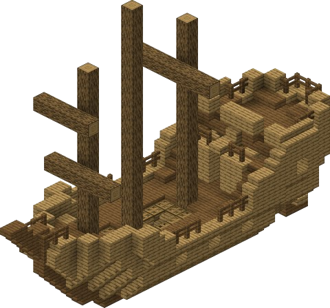

Structures
Nether Fortress
A large structure found in the Nether containing valuable loot, Blaze spawners, and dangerous mobs.
Temple
Ancient structures found in various biomes, often containing traps and treasure such as Desert Temples and Jungle Temples.
Village
Populated areas with villagers, houses, farms, and trading opportunities.
End City
Structures found in the End dimension, containing valuable loot and shulkers.
Stronghold
Underground structures containing the End Portal and various rooms.
Ocean Monument
Large underwater structures inhabited by Guardians and Elder Guardians, containing valuable blocks and treasure.
Woodland Mansion
Rare large structures found in Roofed Forest biomes, inhabited by hostile mobs like Vindicators and Evokers.
Ruined Portal
Partially destroyed Nether portals found in both the Overworld and Nether, often surrounded by loot chests.

Shipwreck
Wooden structures resembling sunken ships in varying states of deterioration, containing up to three loot chests.